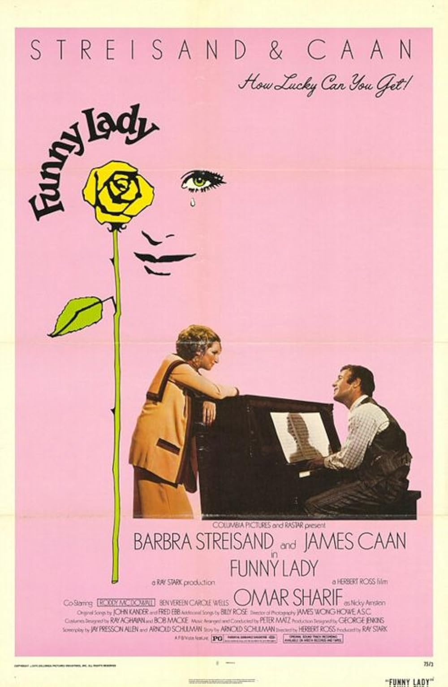

Funny Lady
48th Academy Awards
(Oscars 1976)
5 Nominations, 0 Awards
| Nominations | ||
|---|---|---|
| Category | Nominees | Result |
| Cinematography | James Wong Howe | Nominated |
| Costume Design | Bob Mackie and Ray Aghayan | Nominated |
| Sound | Curly Thirlwell, Don MacDougall, Jack Solomon, and Richard Portman | Nominated |
| Music (Scoring: Original Song Score and Adaptation -or- Scoring: Adaptation) | Peter Matz | Nominated |
| Music (Original Song) "How Lucky Can You Get" |
Fred Ebb and John Kander | Nominated |